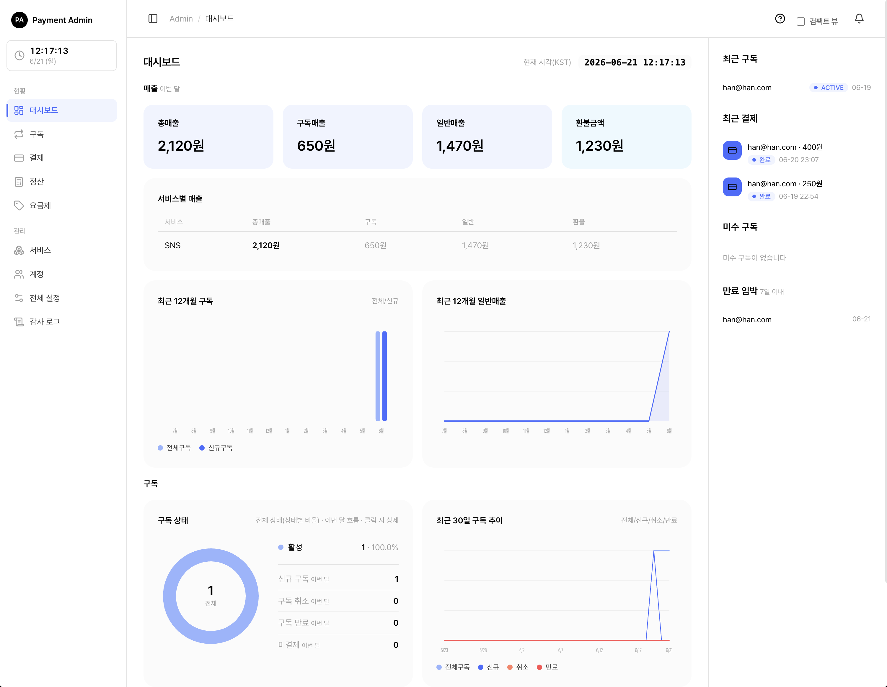
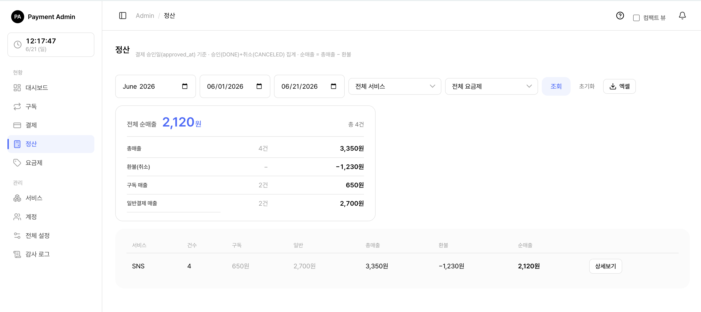

9. 대시보드
관리자 콘솔에 로그인하면 가장 먼저 보이는 화면이 대시보드입니다. 이번 달 매출 요약, 구독 상태 현황, 12개월·30일 추이 그래프, 그리고 우측 패널(최근 결제·미수 구독·만료 임박)을 한 화면에서 보여줍니다. 이 문서는 화면에 나오는 숫자와 그래프를 어떻게 읽는지, 각 숫자가 어떻게 계산되는지를 안내합니다.
🍎쉽게 말하면, 대시보드는 "구독·결제·매출이 지금 어떤 상태인지 한눈에 보는 계기판"입니다.
참고: 대시보드는 조회 전용 화면입니다. 여기서는 데이터를 만들거나 고치지 않고, 보기만 합니다. 카드·숫자를 클릭하면 더 자세한 목록 화면으로 이동할 뿐입니다.
함께 보기: 구독 관리 · 일반결제·환불 · 관리자 콘솔 사용하기
9.1 대시보드 개요 — 역할에 따라 보이는 범위

대시보드는 두 역할 모두 볼 수 있지만, 데이터 범위가 다릅니다.
| 역할 | 대시보드가 보여주는 범위 | 서비스별 표 |
|---|---|---|
| SYSTEM_ADMIN 전체 관리자 | 모든 서비스를 합친 전체 기준 | 보임 (서비스별 매출·구독 표) |
| SERVICE_MANAGER 서비스 담당자 | 자신이 담당하는 서비스만 모은 기준 | 보이지 않음 |
즉 같은 "총매출 카드"라도, 전체 관리자에게는 모든 서비스를 합친 금액이, 서비스 담당자에게는 담당 서비스만 합친 금액이 표시됩니다. 모든 그래프와 카드가 이 범위 규칙을 똑같이 따릅니다.
💡참고: 서비스 담당자에게는 "서비스별 매출 표"와 "서비스별 구독 표"가 아예 표시되지 않습니다. 이 두 표는 전체 관리자 전용입니다.
팁: 화면 우측 상단에는 현재 시각(한국 시간, KST) 이 표시되며 1초마다 갱신됩니다. 대시보드 숫자가 "언제 기준"인지 헷갈릴 때 참고하세요.
9.2 구독 지표 — 지금 구독이 어떤 상태인가
구독 상태 도넛 (전체 비율)
화면 가운데의 도넛 그래프는 현재 모든 구독을 상태별로 나눠 비율로 보여줍니다. 도넛 중앙에는 전체 구독 수가 표시됩니다. 각 색깔 조각을 클릭하면 그 상태로 필터된 구독 목록으로 이동합니다.
| 상태 | 한글 표시 | 뜻 |
|---|---|---|
| TRIAL | 체험 | 무료 체험 기간 중인 구독 |
| ACTIVE | 활성 | 정상적으로 결제되며 이용 중 |
| PAST_DUE | 미수 | 결제일이 지났는데 결제가 안 된 상태 |
| SUSPENDED | 정지 | 결제 실패가 이어져 정지된 상태 |
| CANCELED | 취소 | 취소 요청됨(기간이 남아 있으면 만료일까지는 이용 가능) |
| EXTENDED | 연장처리 | 만료일 연장이 적용된 상태 |
| EXPIRED | 만료 | 기간이 끝나 종료된 구독 |
💡참고: 도넛에는 만료(EXPIRED)된 구독까지 포함됩니다. 스코프 안에 구독이 하나도 없으면 회색 "데이터 없음" 도넛이 표시되는데, 이는 오류가 아니라 정상입니다.
이번 달 구독 흐름 지표 (도넛 옆)
도넛 옆에는 이번 달(매월 1일 0시부터 현재까지) 구독이 어떻게 움직였는지 보여주는 4개 숫자가 있습니다. 각 항목을 클릭하면 관련 목록으로 이동합니다.
| 지표 | 무엇을 세나 |
|---|---|
| 신규 구독 | 이번 달에 새로 생긴 구독 수 |
| 구독 취소 | 이번 달에 취소된 구독 수. 사용자가 직접 취소한 것과, 결제 실패로 강제 정지된 것을 합산합니다 |
| 구독 만료 | 이번 달에 만료(종료)된 구독 수 |
| 미결제 | 이번 달에 결제가 실패한 건수 |
🍎쉽게 말하면, "신규 - 취소 - 만료"를 보면 이번 달에 구독이 늘었는지 줄었는지 흐름을 가늠할 수 있습니다.
주의: "구독 취소" 숫자는 단순히 취소 상태인 구독 수가 아니라, 이번 달에 일어난 취소 사건(사용자 취소 + 강제 정지)의 건수입니다. 그래서 도넛의 "취소" 조각 수와 다를 수 있습니다.
9.3 결제 지표 — 이번 달 매출 카드 4개
화면 상단에는 이번 달(매월 1일 0시부터 현재까지) 매출을 요약한 카드 4개가 있습니다. 각 카드를 클릭하면 그 조건으로 필터된 결제 목록으로 이동합니다.
| 카드 | 의미 | 클릭하면 |
|---|---|---|
| 총매출 | 이번 달 모든 결제로 들어온 순매출 합계 (구독 + 일반) | 이번 달 완료 결제 목록 |
| 구독매출 | 그중 구독 정기결제로 들어온 금액 | 이번 달 구독 결제 목록 |
| 일반매출 | 그중 단건(일반) 결제로 들어온 금액 | 이번 달 일반 결제 목록 |
| 환불금액 | 이번 달에 돌려준 금액 합계 | 이번 달 취소(환불) 결제 목록 |
매출 카드 숫자는 어떻게 계산되나
매출은 단순히 "결제된 원금"이 아니라, 환불을 반영한 순매출입니다.
- 완료된 결제는 결제 금액에서 그동안 부분환불한 금액을 뺀 값으로 잡힙니다. (관리자가 일부만 환불한 경우, 그만큼 매출에서 빠집니다.)
- 취소된 일반결제는 전액 취소면 0원으로, 일부 수수료만 보유한 취소면 그 남긴 수수료만 매출로 잡힙니다.
즉, 순매출 = 결제 원금 − 환불 금액 으로 계산됩니다. 정산 화면의 "순매출"과 같은 금액입니다.
💡참고: 매출 카드는 승인 시각(결제가 승인된 날) 을 기준으로 그 달에 집계됩니다. 반면 환불금액 카드는 환불을 요청한 날 을 기준으로 집계됩니다. 그래서 "지난달 결제를 이번 달에 환불"하면, 매출은 지난달에, 환불은 이번 달에 잡힐 수 있습니다.
팁: 환불금액 카드는 환불이 0원이면 긍정 색상으로 표시됩니다. 환불이 없을수록 좋은 상태라는 뜻입니다.
9.4 정산 보기 — 서비스별 총매출·환불·순매출

전체 관리자에게는 대시보드에 서비스별 매출 표가 함께 표시됩니다(서비스 담당자에게는 보이지 않습니다). 이번 달 기준으로 서비스마다 매출을 나눠 보여주며, 총매출이 많은 서비스가 위에 옵니다.
| 컬럼 | 의미 |
|---|---|
| 서비스 | 서비스 이름 (클릭하면 서비스 상세로 이동) |
| 총매출 | 이번 달 그 서비스의 순매출 합계 |
| 구독 | 그중 구독 정기결제 매출 |
| 일반 | 그중 단건(일반) 결제 매출 |
| 환불 | 이번 달 그 서비스가 돌려준 환불 합계 |
환불과 순매출 — 부분취소도 환불에 포함
이 표의 환불 금액에는 두 종류의 환불이 모두 합산됩니다.
- 전액 취소: 결제 전체를 취소한 경우, 돌려준 금액 전부.
- 부분취소(부분환불): 결제는 완료 상태로 두고 일부만 환불한 경우, 그 환불한 금액.
🍎쉽게 말하면, 관리자가 1만 원 결제 중 3천 원만 환불했다면, 그 3천 원도 "환불"에 포함됩니다. 이 결제의 순매출은 7천 원(1만 − 3천)으로 잡힙니다.
대시보드의 서비스별 표는 빠른 요약용입니다. 기간을 직접 정하고, 서비스·요금제로 더 자세히 거르고, 엑셀로 내려받으려면 정산 화면을 이용하세요. 정산 화면도 같은 계산 규칙(순매출 = 총매출 − 환불, 부분취소 포함)을 사용합니다.
🔗함께 보기: 기간 선택·요금제 필터·엑셀 다운로드가 필요하면 일반결제·환불 흐름과 정산 화면을 참고하세요.
9.5 요금제·서비스별 구독 지표
전체 관리자 화면에는 서비스별 구독 표 도 함께 표시됩니다. 서비스마다 구독이 얼마나 있고 이번 달에 어떻게 변했는지 한눈에 비교할 수 있습니다. 현재 구독 수가 많은 서비스가 위에 옵니다.
| 컬럼 | 의미 |
|---|---|
| 서비스 | 서비스 이름 (클릭하면 서비스 상세로 이동) |
| 현재구독 | 지금 시점에 열려 있는(이용 중인) 구독 수 |
| 신규 | 이번 달 새로 생긴 구독 수 |
| 취소 | 이번 달 취소된 구독 사건 수 |
| 만료 | 이번 달 만료된 구독 수 |
| 구독매출 | 이번 달 그 서비스의 구독 정기결제 매출 |
💡참고: "현재구독(열린 구독)"에는 체험·활성·미수·정지·연장처리 상태가 포함되며, 취소된 구독은 만료일이 아직 남아 있을 때만 열린 것으로 셉니다. 만료된 구독은 제외됩니다.
요금제별 가격·결제주기·할인 설정 자체는 대시보드가 아니라 요금제 화면에서 관리합니다. 대시보드는 그 요금제로 만들어진 구독·매출이 서비스 단위로 얼마나 모였는지를 요약해 보여 줍니다.
🔗함께 보기: 요금제를 만들고 가격·주기·할인을 설정하려면 요금제 관리를 참고하세요.
9.6 12개월·30일 추이 그래프 읽는 법
최근 12개월 구독 (막대 그래프)
현재 달을 포함한 과거 12개월 동안, 달마다 두 가지 막대를 보여줍니다.
- 전체구독: 그 달 말 시점에 열려 있던 구독 수 (그 시점의 누적 스냅샷).
- 신규구독: 그 달에 새로 생긴 구독 수.
🍎쉽게 말하면, "전체구독" 막대가 달마다 올라가면 누적 구독이 늘고 있는 것이고, "신규구독" 막대는 그달의 유입 속도를 보여줍니다.
최근 12개월 일반매출 (영역 그래프)
달마다 단건(일반) 결제 매출 을 곡선(영역)으로 보여줍니다. 여기에도 매출 계산 규칙이 똑같이 적용되어, 완료 결제는 부분환불을 뺀 금액으로, 취소 결제는 남긴 수수료만 더해집니다.
최근 30일 구독 추이 (선 그래프)
최근 30일 동안 날마다 전체구독·신규·취소·만료 네 개의 선을 함께 보여줍니다. 짧은 기간 동안 구독이 어떻게 늘고 줄었는지 세밀하게 볼 때 유용합니다. (가로축 날짜 라벨은 보기 편하도록 일부 날짜만 표시됩니다.)
💡팁: 12개월 그래프는 "큰 흐름(추세)"을, 30일 그래프는 "최근 변화(최신 움직임)"를 보는 데 적합합니다. 둘을 함께 보면 추세와 최근 변화를 모두 파악할 수 있습니다.
우측 패널 — 바로 챙겨야 할 항목
화면 오른쪽에는 항상 보이는 패널이 있어, 자주 확인해야 할 항목을 모아 줍니다. 각 항목을 클릭하면 해당 구독 상세로 이동합니다.
| 패널 | 보여주는 것 |
|---|---|
| 최근 구독 | 가장 최근에 생긴 구독 (최대 8건) |
| 최근 결제 | 가장 최근 결제 (최대 8건). 무료 체험·0원 첫결제도 0원으로 함께 표시 |
| 미수 구독 | 미수·정지 상태로 결제가 밀린 구독 (최대 5건) |
| 만료 임박 | 7일 안에 만료 예정인 구독 (최대 5건) |
💡팁: "미수 구독"과 "만료 임박"은 방치하면 이탈로 이어질 수 있는 항목입니다. 대시보드에 들어왔을 때 이 두 패널을 먼저 챙기면 좋습니다.
🔗